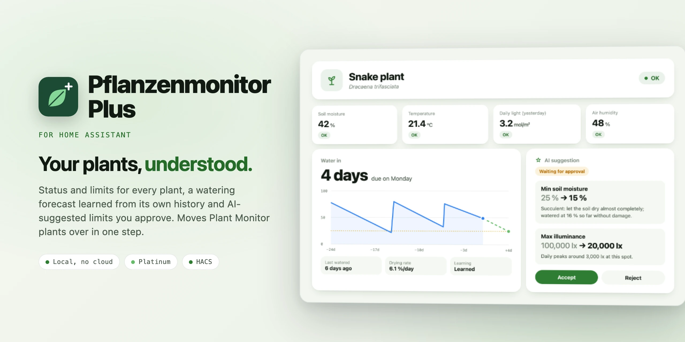

Plants in Home AssistantPflanzen in Home Assistant
Pflanzenmonitor Plus watches every plant against its limits, learns from the soil moisture when it was watered and when it needs water again, and lets an AI suggest limits for the species, approved by you. It does everything Plant Monitor does and moves its plants over in one step.Pflanzenmonitor Plus prüft jede Pflanze gegen ihre Grenzwerte, lernt aus der Bodenfeuchte, wann gegossen wurde und wann sie wieder Wasser braucht, und lässt eine KI Grenzwerte nach Pflanzenart vorschlagen, freigegeben von dir. Es kann alles, was der Plant Monitor kann, und zieht dessen Pflanzen in einem Schritt um.

What it doesWas es kann
Works with any sensor Home Assistant knows: Zigbee, Bluetooth, Matter or a room sensor nearby.Arbeitet mit jedem Sensor, den Home Assistant kennt: Zigbee, Bluetooth, Matter oder ein Raumsensor in der Nähe.
plant.*Zustand wie plant.*OK or problem per plant, with problems, the status of every reading and the species, so cards and templates keep working.OK oder Problem je Pflanze, mit problems, dem Zustand jedes Messwerts und der Art, damit Karten und Vorlagen weiterlaufen.
A forecast from the plant's own past cycles, scaled to how fast the soil dries today. In autumn it dries more slowly than in summer.Eine Vorhersage aus den früheren Zyklen der Pflanze, umgerechnet auf das heutige Abtrocknungstempo. Im Herbst trocknet es langsamer als im Sommer.
Limits for the species with reasons. Safety rules live in code, nothing changes until you accept, and every change can be undone.Grenzwerte nach Pflanzenart mit Begründung. Die Schutzregeln stehen im Code, nichts ändert sich vor deiner Freigabe, und jede Änderung lässt sich zurücknehmen.
PPFD from lux (or straight from a PPFD sensor), the daily light integral for today, yesterday and the last 24 hours, plus VPD.PPFD aus Lux (oder direkt vom PPFD-Sensor), das Tageslicht für heute, gestern und die letzten 24 Stunden, dazu das Dampfdruckdefizit.
Rain does not count as watering. "Rain expected" and "Frost risk" from the hourly forecast against the plant's minimum temperature.Regen zählt nicht als Gießen. „Regen erwartet“ und „Frostgefahr“ aus der stündlichen Vorhersage gegen die Mindesttemperatur der Pflanze.
43 triggers and 35 conditions: a problem started, a reading became too low or too high, a sensor became stale. Target plants by area or label.43 Auslöser und 35 Bedingungen: ein Problem beginnt, ein Messwert wird zu niedrig oder zu hoch, ein Sensor veraltet. Pflanzen auch über Raum oder Label wählen.
LearningLernen
Coming from Plant MonitorUmstieg vom Plant Monitor
A repair under Settings moves every plant over. Afterwards Plant Monitor can be uninstalled.Ein Eintrag unter Reparaturen zieht alle Pflanzen um. Danach lässt sich der Plant Monitor deinstallieren.
Every entity keeps its ID; only plant.name becomes sensor.name, with the same states and attributes.Jede Entität behält ihre ID; nur aus plant.name wird sensor.name, mit gleichen Zuständen und Attributen.
The limits come from the live values, together with sensors, species, picture, problems, wait after watering and outdoors.Die Grenzwerte kommen aus den aktuellen Werten, zusammen mit Sensoren, Art, Bild, Problemen, Wartezeit und „draußen“.
Custom names and icons, labels, hidden or disabled entities, display and voice assistant settings come along, and the live light sums too.Eigene Namen und Symbole, Labels, ausgeblendete oder deaktivierte Entitäten, Anzeige- und Assist-Einstellungen ziehen mit, die Lichtsummen auch.
The move runs on even if you close the dialog, only starts when Plant Monitor is running, and lists automations that still use old IDs.Der Umzug läuft weiter, auch wenn du den Dialog schließt, startet nur bei laufendem Plant Monitor und nennt Automationen, die noch alte IDs nutzen.
EntitiesEntitäten
| EntityEntität | What it showsWas sie zeigt |
|---|---|
| Plant (status)Pflanze (Zustand) | OK or problem, the status of every reading, the problems with value and limits, the species.OK oder Problem, der Zustand jedes Messwerts, die Probleme mit Wert und Grenzen, die Art. |
| ReadingsMesswerte | Soil moisture, temperature, soil temperature, humidity, illuminance, conductivity, CO2 from your sensors; VPD, PPFD and daily light.Bodenfeuchte, Temperatur, Bodentemperatur, Luftfeuchte, Helligkeit, Leitfähigkeit, CO2 von deinen Sensoren; VPD, PPFD und Tageslicht. |
| LimitsGrenzwerte | Min and max for every measurement and the lux-to-PPFD factor.Min und Max je Messgröße und der Lux-zu-PPFD-Faktor. |
| WateringGießen | Water in, watering due, last watered, drying rate, learning status.Gießen in, Gießen fällig, zuletzt gegossen, Abtrocknung, Lernstand. |
| OutdoorsDraußen | Rain expected, frost risk.Regen erwartet, Frostgefahr. |
| AI (optional)KI (optional) | The suggestion with "old → new" and reasons, buttons to accept, reject, undo and ask.Der Vorschlag mit „alt → neu“ und Gründen, Knöpfe zum Übernehmen, Ablehnen, Zurücknehmen und Fragen. |
InstallInstallieren
https://github.com/SH1FT-W/pflanzenmonitor-plusNo cloud account, no YAML, no extra packages.Kein Cloud-Konto, kein YAML, keine zusätzlichen Pakete.
Download the latest release, copy its custom_components/pflanzenmonitor_plus folder into /config/custom_components/ and restart Home Assistant.Lade das neueste Release herunter, kopiere den Ordner custom_components/pflanzenmonitor_plus nach /config/custom_components/ und starte Home Assistant neu.
Good to knowGut zu wissen
Right away from the current drying rate, from past cycles once two waterings were seen. In the first 24 hours after watering there is no rate, because excess water drains.Sofort aus dem aktuellen Tempo, aus früheren Zyklen, sobald zweimal gegossen wurde. In den ersten 24 Stunden nach dem Gießen gibt es kein Tempo, weil überschüssiges Wasser abläuft.
Plant name, species, room, indoors or outdoors, month, country, the limits and 30-day summaries of the readings. No locations, no people. It only runs if you pick an AI task entity.Pflanzenname, Art, Raum, drinnen oder draußen, Monat, Land, die Grenzwerte und 30-Tage-Zusammenfassungen der Messwerte. Keine Orte, keine Personen. Sie läuft nur, wenn du eine KI-Aufgaben-Entität wählst.
The old cycles fit less for a while; the forecast adapts through today's drying rate and is reliable again after two new cycles.Die alten Zyklen passen eine Weile weniger; die Vorhersage gleicht sich über das heutige Tempo an und ist nach zwei neuen Zyklen wieder verlässlich.
You don't need it anymore. Until you move the plants, Plus shows the move under Repairs and leaves everything else alone.Du brauchst ihn nicht mehr. Bis du die Pflanzen umziehst, zeigt Plus den Umzug unter Reparaturen und lässt alles andere in Ruhe.
Download the diagnostics (Settings, Devices & services, Pflanzenmonitor Plus, three dots) and attach them to a GitHub issue. AI texts are redacted; check the file for plant names first.Diagnose herunterladen (Einstellungen, Geräte & Dienste, Pflanzenmonitor Plus, drei Punkte) und an ein GitHub-Issue hängen. KI-Texte sind geschwärzt; Pflanzennamen vorher prüfen.
Pflanzenmonitor Plus
One integration for every plant, local and free.Eine Integration für jede Pflanze, lokal und kostenlos.